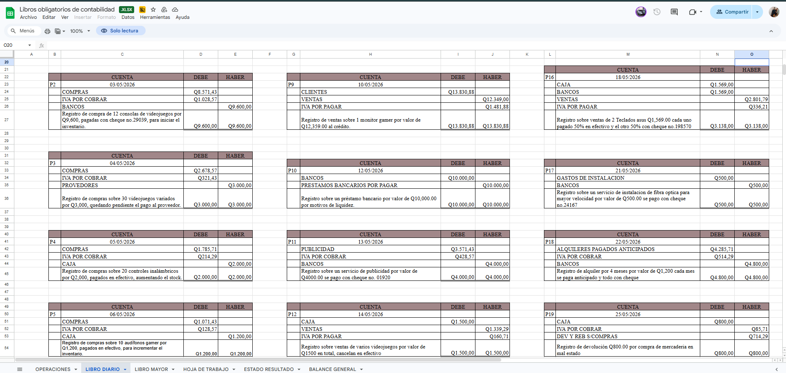
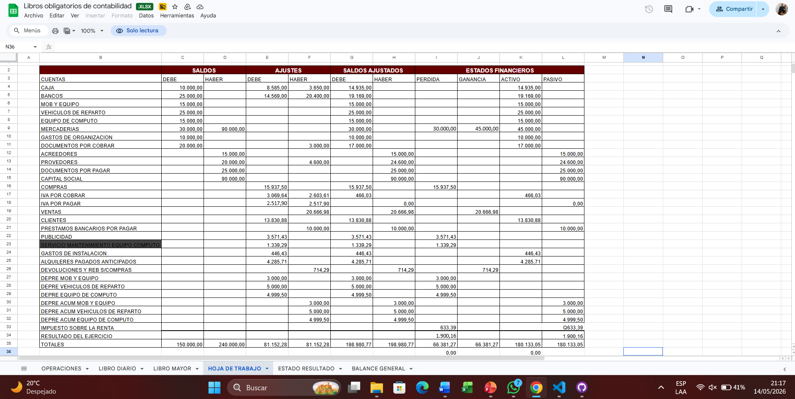
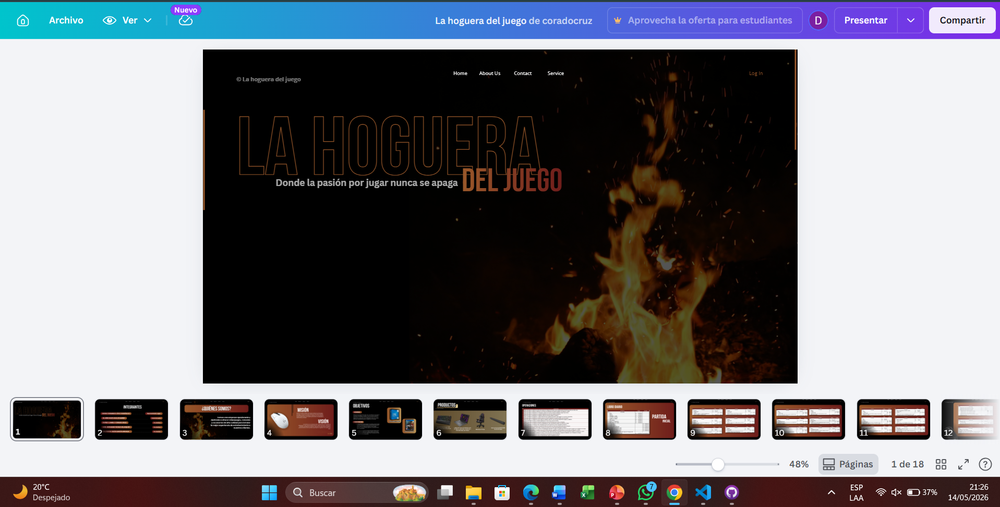

COMPETENCIAS ADQUIRIDAS ESTE SEMESTRE
Terminos contables 65%
Pude aprender sobre terminos contables básicos y así mismo como clasificar cuentas si son debe o haber
tambien sobre que significa o para que se utiliza según el contexto.
Elaboracion de Libros Contables 60%
Durante este curso aprendi a realizar libros contables como Libro Diario, Mayor, Estado de Resultados, Balance General
y a realizar hojas de trabajo.
Lectura y Analisis de Leyes Tributarias -45%
Tambien durante el curso nos correspondio leer el Código de Comercio
PROYECTOS REALIZADOS EN EL CURSO
CREACIÓN DE UNA EMPRESA
Creación de una empresa con todos los libros obligatorios establecidos por el Código de Comercio en grupo y presentar
en clase junto con nuestro cátalogo de productos ficticios
LINK DEL VIDEO PENDIENTE

IMAGENES
 |
 |
 |